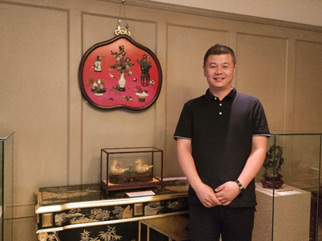
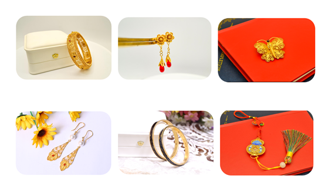

中国掐丝珐琅传承网
中国掐丝珐琅传承网
00
-
00
-
00
中国掐丝珐琅传承网
来源：“育见新闻” 微信公众号
2025.02.10
他出身景泰蓝世家自幼受到景泰蓝艺术的熏陶他全面掌握景泰蓝各道工序 技艺精湛他是产品研发的佼佼者凭借对景泰蓝工艺的深刻理解高效推进产品生产和研发他是艺术跨界结合的探索者秉持艺术回归自身的理念为传统艺术注入新的活力大国文化守护者走进景泰蓝的绮丽世界。
景泰蓝，学名铜胎掐丝珐琅，是中国传统工艺品之一。它以紫铜为胎，用铜丝掰制成各种纹饰，再填充以天然矿石制成的釉料，经过多次烧制后打磨，最后镀金而成。其制作工艺繁琐复杂，需要七大工序，每一步都凝聚着匠人的智慧和心血。而景泰蓝之所以得名，是因为在明朝景泰帝时期，这种工艺品备受皇帝喜爱，被大量制作并印上了景泰年号，因此得名景泰蓝。
王海斌对景泰蓝有着深厚的感情。在他看来，景泰蓝不仅是艺术的瑰宝，更是文化的载体和技艺的结晶。他深知景泰蓝制作的不易，也了解这项技艺的传承面临着巨大的困境。全国从事景泰蓝生产的匠人不足1500人，且平均年龄在45岁以上，年轻人不愿意投身这个行业，工厂也不愿意培养年轻人。
然而，王海斌并没有放弃。他坚持学习和探索，不断提高自己的技艺水平。2019年，他决定把对景泰蓝的热爱变成事业，创办了廊坊蓝嵌手工艺品有限公司。几年间，他不断学习、摸索，对景泰蓝的传统工艺有了更深的了解和掌握。2023年，他又在北京开设了景元堂文化发展有限公司，汇聚了20多名从业十年以上的景泰蓝及花丝镶嵌匠人，共同创作出一件件精美的艺术品。
王海斌深知景泰蓝要传承和发展，必须让更多人了解和喜爱它。王海斌坚定地说：“传承是一种责任，我将用一生履行一个匠人的职责。”他致力于恢复景泰蓝的实用功能，通过创新设计和简化工艺，让景泰蓝更加贴近现代生活。他希望通过自己的努力，让景泰蓝能够进入更多家庭，让更多人通过景泰蓝了解中国的历史和文化。
在他的努力下，景泰蓝逐渐焕发出了新的生机。他的作品不仅在国内受到了广泛的认可，还走向了国际市场。他也积极参与各种文化交流和推广活动，向更多人展示景泰蓝的魅力和价值。
新的一年里，王海斌有着更高的期待。他希望通过自己的创新和努力，让景泰蓝飞入更多寻常百姓家，让更多人能够拥有和欣赏到这件中国传统工艺品的独特魅力。他相信，只要有人愿意去了解、去传承、去创新，景泰蓝这项古老的艺术就一定能够焕发出更加璀璨的光芒。